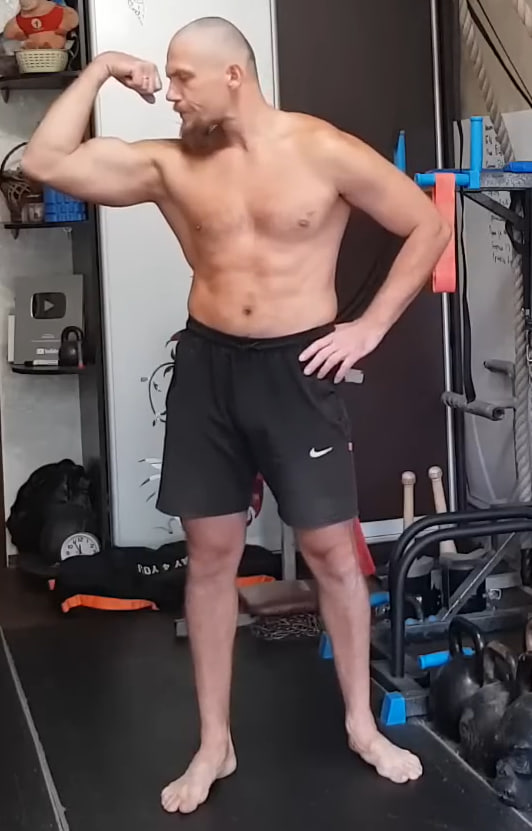
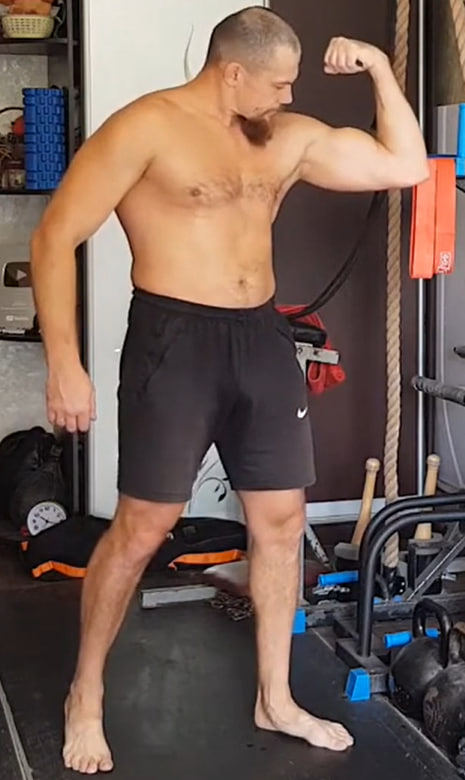
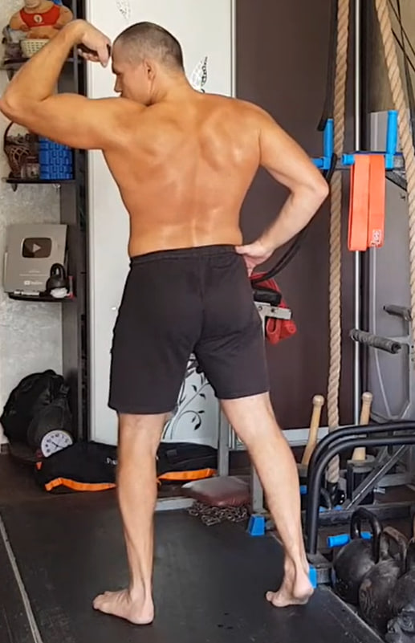
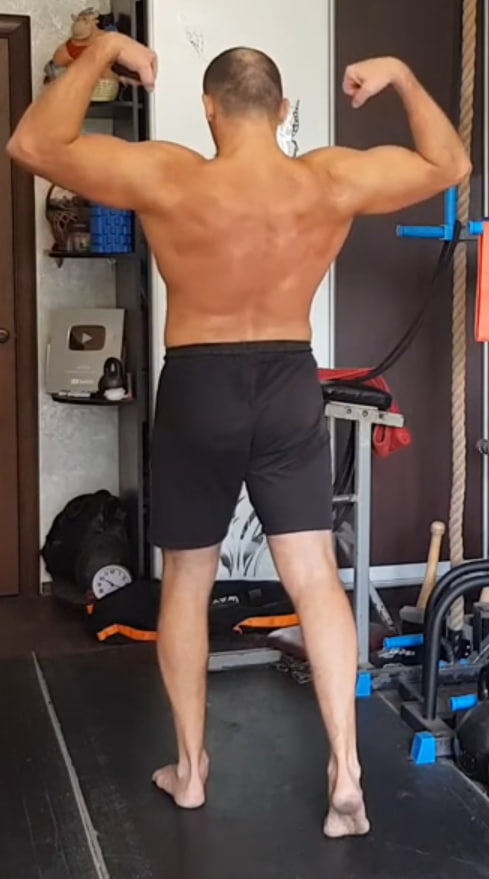
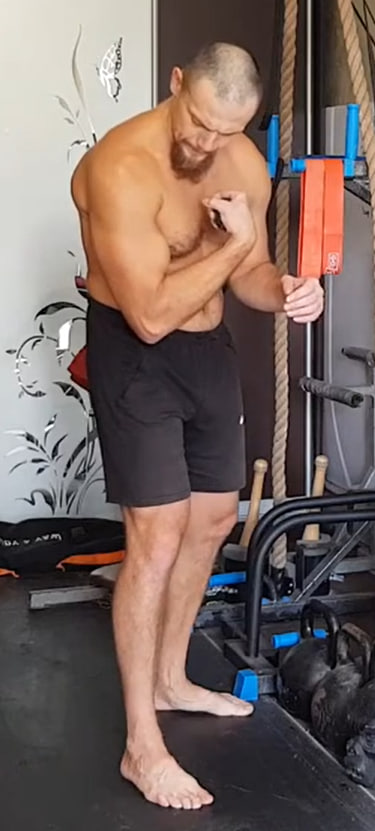
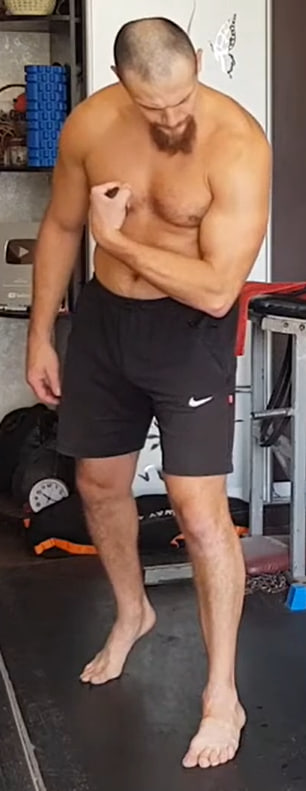
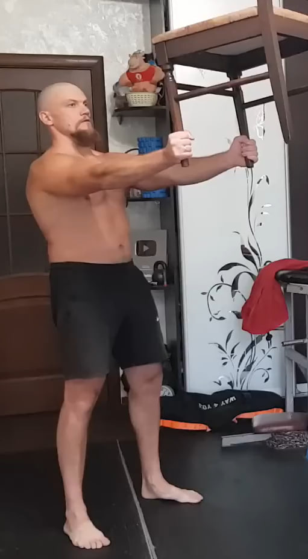

Día 12: isometría y control + empuje (pecho, hombros y tríceps) (sin equipo)
Hoy trabajamos isometría y control, empuje (pecho, hombros y tríceps), agarre y antebrazos con ejercicios simples que caben en una habitación. El objetivo es construir fuerza útil, resistencia y control corporal con el mínimo de equipo.
Prioriza la técnica, respira con control y acumula consistencia: incluso una sesión corta suma cuando la repites día tras día.
1. Flexión isométrica de bíceps con la propia mano
Antes de empezar: haz el calentamiento y repasa la respiración. (No lo saltes.)
Protocolo isométrico. Tensión de 12 segundos. Descansa hasta recuperar la respiración. Repite 10 veces. Por lado, si aplica. Más detalles en Respiración.

Coloca una mano sobre la otra como si la mano inferior fuera una pesa. La mano de trabajo (la de abajo) intenta flexionarse hacia arriba como en un curl de bíceps, mientras la mano de arriba empuja hacia abajo y no deja que el brazo se mueva. Mantén el codo pegado al cuerpo, el hombro relajado y la tensión concentrada en el bíceps, sin balancear el torso. Alterna brazos en cada repetición hasta completar 10 repeticiones por lado .
2. Bíceps isométrico con el brazo casi extendido
Protocolo isométrico. Tensión de 12 segundos. Descansa hasta recuperar la respiración. Repite 10 veces. Por lado, si aplica. Más detalles en Respiración.

Coloca el brazo de trabajo casi completamente extendido hacia abajo, dejando un pequeño ángulo en el codo. Con la otra mano sujeta el antebrazo o la muñeca y empuja hacia abajo mientras el brazo de trabajo intenta flexionarse hacia arriba. La tensión debe concentrarse en el bíceps, sin perder la alineación del hombro. Mantén la contracción durante unos segundos y repite 10 veces por cada brazo.
3. Supinación isométrica con variación de ángulos (con agarre de tela)
Protocolo isométrico. Tensión de 12 segundos. Descansa hasta recuperar la respiración. Repite 10 veces. Por lado, si aplica. Más detalles en Respiración.







Coloca un trozo de tela o un calcetín en la mano para mejorar el agarre y activar el antebrazo. Desde ahí, flexiona el brazo en diferentes ángulos y gira la muñeca hacia afuera (supinación) para crear la máxima contracción del bíceps. Realiza poses isométricas fuertes en varias posiciones: de frente, de lado, en ángulo bajo y con el brazo más elevado.
Las tomas desde la espalda en el vídeo se utilizan solo para que el espectador vea mejor la postura: no es obligatorio repetir exactamente la misma pose de espaldas, basta con mantener la misma sensación de tensión. Mantén cada contracción unos segundos, cambiando ligeramente el ángulo en cada repetición, hasta completar 10 variaciones por cada brazo.
4. Elevación frontal con silla en posición de “silla”


Sujeta una silla por las patas y extiende los brazos completamente al frente, a la altura del pecho o ligeramente por encima, manteniéndolos rectos sin bloquear los codos. En la primera serie puedes mantener la posición de pie, con el torso firme y el pecho abierto para sentir el trabajo de la parte frontal de los hombros.
A partir de la segunda serie adopta la posición de “silla”: flexiona las rodillas hasta formar un ángulo cercano a 90 grados, como si estuvieras sentado en una silla invisible, y mantén la espalda totalmente recta. Desde esta postura sostiene la silla al frente durante 10 segundos, evitando que el peso te haga inclinarte hacia adelante o hacia atrás. Baja la silla con control y repite el ciclo hasta completar 10 repeticiones.
5. Tríceps isométrico con el brazo a 90 grados
Protocolo isométrico. Tensión de 12 segundos. Descansa hasta recuperar la respiración. Repite 10 veces. Por lado, si aplica. Más detalles en Respiración.

Flexiona el brazo de trabajo formando un ángulo cercano a 90 grados y colócalo por encima de la mano de apoyo. La mano inferior actúa como punto fijo y empuja hacia arriba, mientras el brazo de trabajo intenta extenderse hacia abajo, creando una contracción intensa del tríceps. Mantén la tensión máxima unos segundos y repite 10 veces por cada brazo, cuidando que el hombro no se eleve hacia la oreja.
6. Fondos en banco para tríceps con pausa isométrica
Protocolo isométrico. Tensión de 12 segundos. Descansa hasta recuperar la respiración. Repite 10 veces. Por lado, si aplica. Más detalles en Respiración.


Siéntate frente a un banco y apoya las manos en el borde con los dedos mirando hacia adelante. Extiende las piernas al frente y eleva la cadera para quedar en suspensión. Desciende flexionando los codos hacia atrás y luego sube casi por completo, sin bloquearlos.
Repite el ciclo 10 veces , sin perder la estabilidad del torso ni permitir que los hombros se cierren hacia adelante.
7. Isometría lateral para el dorsal ancho
Protocolo isométrico. Tensión de 12 segundos. Descansa hasta recuperar la respiración. Repite 10 veces. Por lado, si aplica. Más detalles en Respiración.

Coloca las manos detrás de la cabeza con los codos bien abiertos. Inclina el torso ligeramente hacia un lado sin girar las caderas ni el pecho. Desde esta postura contrae con fuerza el dorsal ancho del lado hacia el que te inclinas, mientras el lado contrario se estira de forma natural.
Mantén la contracción unos segundos buscando el máximo acortamiento muscular sin perder la verticalidad general del cuerpo. Vuelve al centro y repite hacia el otro lado hasta completar 10 repeticiones por cada lado.